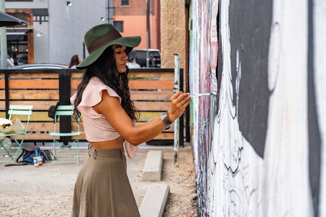
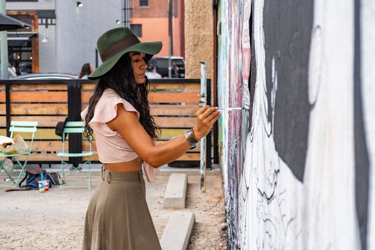

About Us
Andreas Art Studio, nestled in the heart of a bustling artistic community, has grown to become a beacon of creativity and innovation in the world of contemporary art. Founded by Andreas, a visionary artist and curator, the studio was established with the aim of providing a sanctuary for artists to explore, create, and exhibit their work without restraint.
 

From its inception, the studio was designed to be more than just a physical space; it was intended to foster collaboration, inspire creativity, and support artists in their pursuit of artistic excellence. Over the years, Andreas Art Studio has hosted a myriad of exhibitions, workshops, and events that have not only showcased the diverse talents of emerging and established artists but have also pushed the boundaries of traditional art forms.